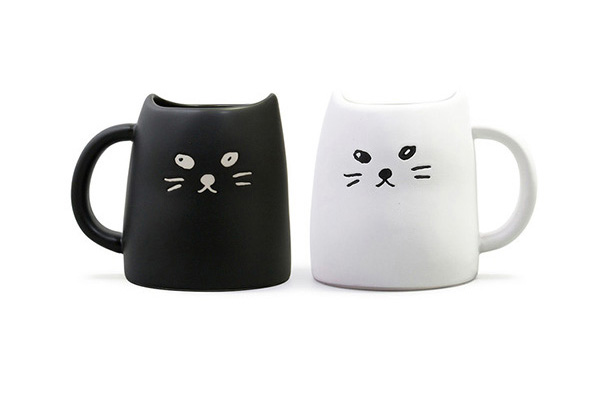
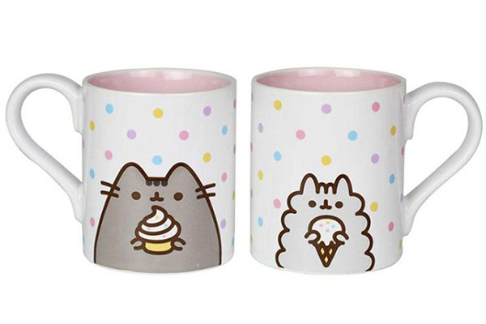
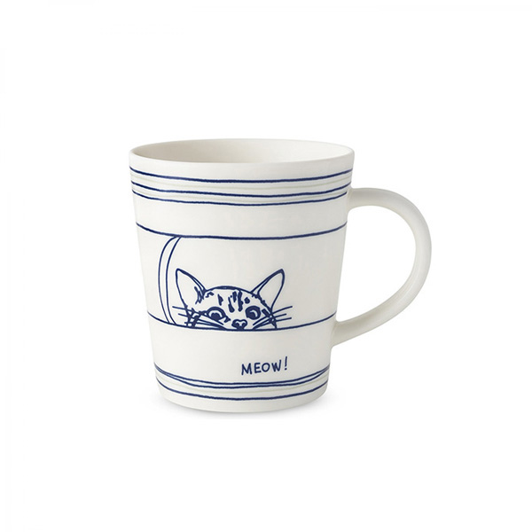
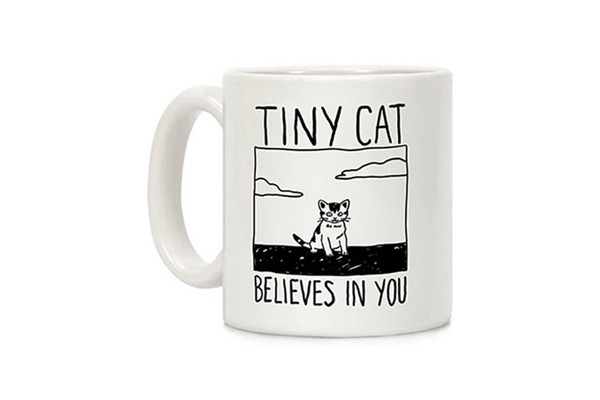
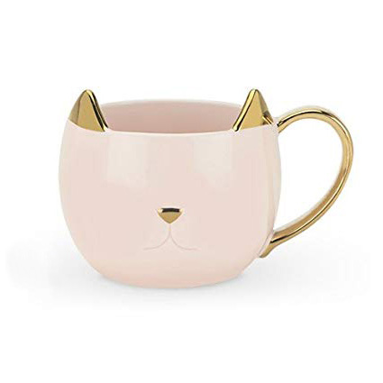

Top Sellers October 2019
This is a blog post that talks about the best selling mugs of October 2019.

Are you still reading? I'm gonna paste the Wikipedia article for mugs
A mug is a type of cup typically used for drinking hot beverages, such as coffee, hot chocolate, soup, or tea. Mugs usually have handles and hold a larger amount of fluid than other types of cup. Usually a mug holds approximately 8-12 US fluid ounces (350 ml) of liquid; double a tea cup. A mug is a less formal style of drink container and is not usually used in formal place settings, where a teacup or coffee cup is preferred. Shaving mugs are used to assist in wet shaving..
Best Seller
Ancient mugs were usually carved in wood or bone, Ceramic mug or shaped of clay, while most modern ones are made of ceramic materials such as bone china, earthenware, porcelain, or stoneware. Some are made from strengthened glass, such as Pyrex.
Go to Product PageSecond Best Seller
Other materials, including enameled metal, plastic, or steel are preferred, when reduced weight or resistance to breakage is at a premium, such as for camping. A travel mug is insulated and has a cover with a small sipping opening to prevent spills.
Go to Product PageThird Best Seller
Techniques such as silk screen printing or decals are used to apply decorations such as logos or images and fanart, which are fired onto the mug to ensure permanence.
Go to Product PageAnother blog post
CWooden mugs were produced probably from the oldest time, but most of them have not survived intact. The first pottery was shaped by hand and was later facilitated by invention of the potter's wheel (date unknown, between 6,500 and 3000 BCE). It was relatively easy to add a handle to a cup in the process thus producing a mug. For example, a rather advanced, decorated clay mug from 4000–5000 BCE was found in Greece
The biggest disadvantage of those clay mugs was thick walls unfit for the mouth. The walls were thinned with development of metalworking techniques. Metal mugs were produced from bronze, silver, gold, and even lead, starting from roughly 2000 BCE, but were hard to use with hot drinks. The invention of porcelain around 600 CE in China brought a new era of thin-walled mugs suitable both for cold and hot liquids, which are enjoyed today.
Travel mugs (introduced in the 1980s) generally employ thermal insulation properties for transporting hot or cold liquids. Similar to a vacuum flask, a travel mug is usually well-insulated and completely enclosed to prevent spillage or leaking, but will generally have an opening in the cover through which the contents can be consumed during transportation without spillage. As the primary mechanism by which hot (not warm) beverages lose heat is evaporation a lid, even a thin plastic one as used on disposable coffee cups which conducts heat quite quickly, also serves a vital role in keeping the drink hot.
New Feature
The whistle mug or hubblebubble is an amusement mug. It has a hollow handle which can be blown through the mug like a whistle. With an empty mug, only one note is emitted, whereas a filled mug produces melodious trills and warblings.
A puzzle mug is a mug which has some trick preventing normal operation. One example is a mug with multiple holes in the rim, making it impossible to drink from it in the normal way. Although it is tempting to grasp the body of the mug covering the visible holes and drink the liquid in the usual manner, this would pour the liquid through hidden perforations near the mug's top. The solution is to cover the holes in the rim with hands, but to drink not through the top, but through a "secret" hole in the hollow handle.